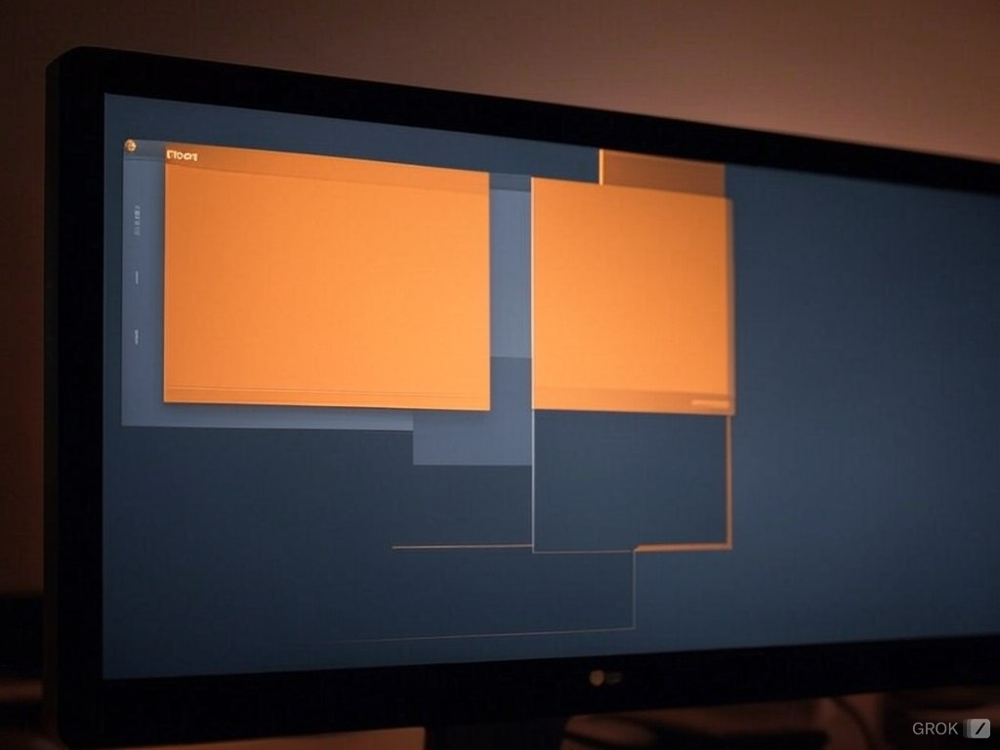

İşletim Sistemleri: Yapıları, Türleri ve Kullanım Alanları

İşletim sistemi,bir bilgisayar programıdır.Temel görevi bilgisayar parçaları arasındaki ilişkiyi düzenlemek aralarında bilgi alışverişi yapmasını sağlamaktır.Yani bir işletim sistemi;temel sistem işlemlerinden, uygulama programlarını çalıştırmaktan ve bilgisayar donanımının doğrudan denetimi ve yönetiminden sorumlu olan bir sistem yazılımıdır
Devamını okumak için tıkla
GİT NEDİR?

Git, bir versiyon kontrol sistemi (VCS) olup, yazılım geliştirme süreçlerinde kodun geçmişini izlemeye, yönetmeye ve farklı sürümlerini kaydetmeye yarar. Git, dağıtık bir yapıya sahiptir, yani her geliştirici kendi bilgisayarında tam bir depo (repository) kopyasına sahip olur. Bu sayede, birden fazla kişi aynı proje üzerinde aynı anda çalışabilir, değişiklikler kolayca izlenebilir ve bir hata durumunda geçmişe dönülerek geri alınabilir
Devamını okumak için tıkla
TRAFİKTE GÜVENLİ SÜRÜŞ REHBERİ

Daha güvenli bir sürüş için dikkate almanız gereken birçok önemli faktör vardır. Bu faktörler, sadece trafikteki davranışlarınızı değil, aynı zamanda aracınızın durumu, çevresel koşullar ve sürüş tekniklerinizi de kapsar. İşte güvenli sürüş için bilmeniz gerekenler;
Devamını okumak için tıkla